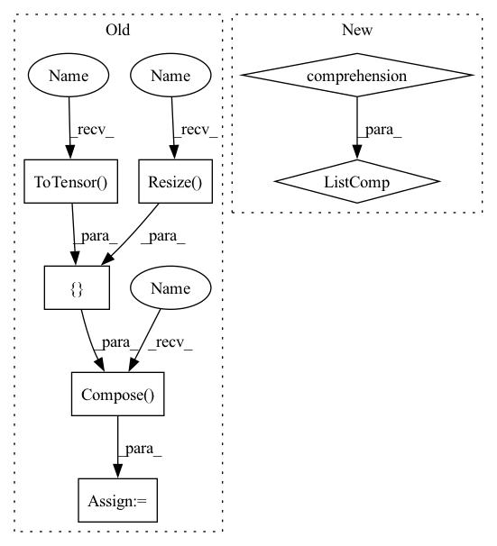

Pattern ID :26162
Before Change
def show_misclassified(misclassified_dictionary, is_dicom = True, num_of_images = 16, figure_size = (5,5)):
row = int(math.sqrt(num_of_images))
sample = random.sample(list(misclassified_dictionary), num_of_images)
transform=transforms .Compose([transforms.Resize( (244, 244)) ,transforms.ToTensor() ])
if is_dicom:
imgs = [torch.from_numpy(dicom_to_narray(i)) for i in sample]
else:
imgs = [transform(Image.open(i).convert("RGB")) for i in sample]After Change
imgs = [torch.from_numpy(dicom_to_narray(i)) for i in sample]
else:
imgs = [transforms(Image.open(i).convert("RGB")) for i in sample]
titles = [(str(i["true_label"]),",", str(i["predicted_label"]),",", str(i["accuarcy"])+"%") for i in sample]
// grid = torchvision.utils.make_grid(imgs, nrow=row)
// plt.figure(figsize=(figure_size))
// plt.imshow(np.transpose(grid, (1,2,0)))
plot_images(images=imgs, titles=titles, figure_size=figure_size)In pattern: SUPERPATTERN
Frequency: 3
Non-data size: 7
Instances Fragment ID: 78861787
Project Name: radtorch/radtorch
Commit Name: 3834eba24d28be2da3399132117d6be36eb143d7
Time: 2020-03-27
Author: elbanan@users.noreply.github.com
File Name: radtorch/visutils.py
M Class Name: AnonimousClass
N Class Name: AnonimousClass
M Method Name: show_misclassified(5)
N Method Name: show_misclassified(4)
M Parent Class:
N Parent Class:
M File Name: radtorch/visutils.py
N File Name: radtorch/visutils.py
M Start Line: 44
M End Line: 51
N Start Line: 78
N End Line: 90
Before Change
if is_image_file(x)]
crop_size = image_size - (image_size % scale_factor) // Valid crop size
self.input_transform = transforms.Compose(
[ transforms.CenterCrop(crop_size), // cropping the image
transforms.Resize( crop_size // scale_factor) ,
transforms.ToTensor() ])
self.target_transform = transforms.Compose(
[transforms.CenterCrop(crop_size),
transforms.ToTensor()])
After Change
super(DatasetFromFolder, self).__init__()
self.data_filenames = [os.path.join(data_dir, x) for x in os.listdir(data_dir) if check_image_file(x)]
self.target_filenames = [os.path.join(target_dir, x) for x in os.listdir(target_dir) if check_image_file(x)]
self.transform = transforms.ToTensor()
def __getitem__(self, index): Fragment ID: 78861789
Project Name: lornatang/fsrcnn-pytorch
Commit Name: 9924908ee49d6dc5cd261a6fec71dce27002c401
Time: 2020-09-30
Author: liuchangyu1111@gmail.com
File Name: fsrcnn_pytorch/datasets.py
M Class Name: DatasetFromFolder
N Class Name: DatasetFromFolder
M Method Name: __init__(3)
N Method Name: __init__(4)
M Parent Class: Dataset
N Parent Class: Dataset
M File Name: fsrcnn_pytorch/datasets.py
N File Name: fsrcnn_pytorch/datasets.py
M Start Line: 38
M End Line: 58
N Start Line: 47
N End Line: 49
Before Change
def __init__(self, image_size, min_year=2005):
self.image_paths = self._load(min_year)
self.length = len(self.image_paths)
self.transform = transforms.Compose([
transforms.Resize( (image_size, image_size)) ,
transforms.RandomHorizontalFlip(),
transforms.ToTensor() ,
transforms.Normalize(0.5, 0.5))
def __len__(self):
return self.length
After Change
"""
def __init__(self, image_size, min_year=2005, transform=None):
super().__init__(image_size, transform)
self.images = [path for path in self.images if self._year_from_path(path) >= min_year]
def _year_from_path(self, path):
name, _ = os.path.splitext(os.path.basename(path))
year = int(name.split("_")[-1]) Fragment ID: 78861788
Project Name: stomoya/animeface
Commit Name: 21e86e8dc2d49667e6edb8863004a229eeb6798a
Time: 2021-02-20
Author: blackie0110@gmail.com
File Name: implementations/general/anime_face.py
M Class Name: YearAnimeFaceDataset
N Class Name: YearAnimeFaceDataset
M Method Name: __init__(4)
N Method Name: __init__(3)
M Parent Class: AnimeFaceDataset
N Parent Class: Dataset
M File Name: implementations/general/anime_face.py
N File Name: implementations/general/anime_face.py
M Start Line: 49
M End Line: 56
N Start Line: 30
N End Line: 32